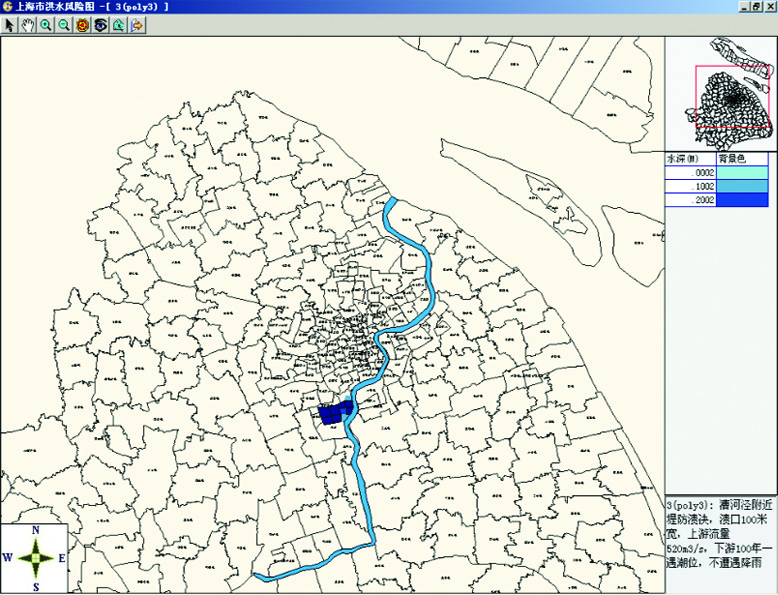
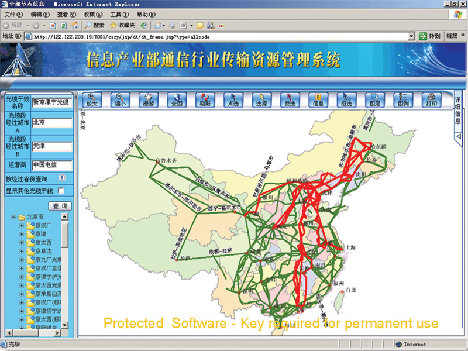

北京市经济运行地理信息系统是国内首次将地理信息技术用于经济运行监测调度的典型成功案例。该系统在零代码 GIS通用定制平台基础上，对北京市经济运行监测指标进行全面的收集和管理 ，集合了电力、成品油、热力、燃气、 煤炭、水资源等六大专题的空间信息管理、图形数据交互查询、统计、发布及可视化展现等功能。通过对经济运行的 空间数据、属性数据以及实时信息的综合分析和挖掘，将社会经济发展的规律直观地展现出来。该系统一经投入使用， 受到了国家发改委、北京市政府及市发改委领导的高度评价与充分肯定，进而在北京市经济运行监测调度地理信息系统 的基础上，逐步扩大规模，最终打造成面向整个北京市发改委各处室的综合性基础地理信息系统平台。

光声新时空在国内率先推出了智慧城市中间件平台，能够零代码快速搭建跨行业及政府各部门的智慧城市GIS应用，实现信息的全面共享。目前已经为铁路、水利、电力、环保、交通、石油、军事、卫生等二十多个行业，包括铁道部、水利部 、文化部、卫生局、工业化信息部、国家电网公司、国家环保部、空军后勤部、中国民航局、北京发改委、北京市政管委、华北电网公司、北京电力公司、上海电力公司、辽河油田、大港油田、中国联通、海南省旅游委、贵州省统计局、中国地科院等上百个单位，成功搭建了上百个智慧城市GIS应用，中间件平台的产业化未来可以打开一个上百万亿的市场空间。
诚征代理

海南国际旅游岛门户网站
基于海南省空间地理信息框架和光声的零代码 GIS 应用快速搭建平台，结合GIS、3G、电子支付、 物联网等新兴技术，建设集地理信息展现、旅游品牌宣传、行业管理、公共服务、商务运营于一体，面向国内外多层面全方位的大型 综合旅游信息平台，打造阳光旅游技术支撑平台、为游客提供快乐无忧的服务。
公共服务门户：建设富有海南特色、国内一流、国际 领先、 功能 齐全、内容权威的国际旅游岛地理信息公共服务门户，提升海南旅游的国际影响力，打造海南旅游的国际化品牌；以业务 服务为基础，以游客服务为重点，建立海南省统一的旅游地理信息服务平台。
电子商务门户：基于海南的电子地图，建立集成海南高端 精品旅游产品为一体的权威电子商务平台，通过互联网向全世界潜在旅客进行网络营销，让国内外旅游者足不出户即可查询和预订。
行业管理门户：依托 GIS技术展现全省的旅游资源，主要包括：景区、酒店、旅行社、商店、娱乐场所、高尔夫球场的空间定位和查询 管理。建设旅游行业应用综合性信息门户，加强政府监管力度，规范旅游市场秩序，为企业提供一站式服务，提高政府服务效率。
北京市经济社会地理信息系统
系统以GIS 为核心， 以北京市电子地图、遥感影像为基础，对投资、规划和经济运行等社会经济数据进行全面收集和统一管理,通过对社会经济的空间数据、 属性数据以及实时信息的综合分析和挖掘，将社会经济数据在电子地图上进行可视化展现与空间分析,为领导决策分析提供科学依据，通过建设面向北京市政府的经济地理信息系统，为北京市的政府管理者提供现代化的管理手段。 本系统以光声零代码 GIS通用定制开发平台为基础，快速搭建了北京市发改委的空间地理信息支撑平台，平台通过接入信息办的基础地图、遥感影像、DEM、政务图层、多媒体、地址编码等地图服务，为发改委的形势分析、投资、规划等核心业务部门，实现宏观经济、固定资产投资和规划管理方面 GIS 空间分析和展现功能。 系统主要功能包括：市形市貌、经济概览、投资地图、规划地图、专题栏目（基础设施、社会事业、资源环境、产业）等空间地理信息的空间分析和图形可视化展现模块，为北京市的经济社会管理提供了全新的技术手段。
北京市经济运行地理信息系统
北京市发改委电力管理信息平台
北京市发改委电力管理信息平台是建立在北京电力公司负荷监控、电量远程抄表、 SCADA、 用电营销以及电网图形管理系统基础之上的政府辅助决策分析系统。 系统以电网地理信息系统为核心， 各种电力供需信息由北京电力公司提供，数据通过软件接口从北京电力公司的综合信息平台进行读取，系统通过建立专业的数据分析模型，综合运用信息可视化和数据挖掘技术，对电力供需形势、用户的用电需求、负荷和电量等实时数据进行深入地数据挖掘，通过图形可视化技术，科学准确地将北京地区的电力供需情况直观地展现给政府领导，为政府领导决策提供先进的手段。
大兴区空间地理信息公共服务平台
平台主要是解决了大兴区各委办局新建GIS应用快速搭建，通过该平台的定制工具对空间图形数据加载、图形专题分析、属性数据查询 及统计分析、业务功能、用户权限、用户界面，以及WEBGIS通用组件进行定制，从而快速搭建出满足规划科的“土地规划信息管理系统”、 应急办的“应急调度管理信息系统”、拆迁办“大兴区建设征地补偿管理信息系统”等大兴区各委办局业务需求的WEBGIS应用系统；平台还满足 已有GIS系统数据共享整合、业务系统调用GIS服务的各种需求；从而推动大兴区各委办局基础性、共享性的多源异构空间信息资源的整合、 共享、服务和应用，有效地解决了大兴区各部门、多业务类型对GIS构建的不同需求，并且具有开发周期短、效率高、成本低等显著优点， 使构建的应用服务系统具有较强的时效性。
平台建设了基础空间数据库，通过有效整合既有的大兴区各委办局基础地理数据和专用专题空间数据资源，并接入北京市资源信息 中心提供的公共专题空间数据接口，对新增的业务专题数据可使用采集与绘制的方式进行添加。建成一个集空间属性为一体、现势性强、 信息丰富准确、可扩展的空间共享数据库。
北京扫雪铲冰应急监控调度指挥平台
本项目主要是面向北京市市政管委应对北京冬季冰雪灾害定制开发的全市扫雪铲冰应急监控 调度指挥平台，该平台实时接入了北京市城区上千个视频探头和北京市扫雪车辆的实时GPS监控数据，构建了全市统 一的环卫车辆移动视频和GPS监控服务平台。按照“提前预防、充分准备、周密部署、快速反应、协调联动、果断处置 ”的原则，开展全市扫雪铲冰应急处置工作，增强雪天道路交通应急保障能力，保障雪天道路交通通行条件，保障本 市城市正常运行。该平台以光声的零代码GIS通用定制开发平台为基础搭建，其主要功能包括城市扫雪铲冰作业空间地 图数据的获取、维护、更新、建库和管理，通过对零代码 GIS通用定制开发平台的WEBGIS通用组件进行配置，快速搭建 了全市扫雪铲冰作业应急监控调度指挥平台，它主要以北京市的电子地图为基础，通过整合市级信息化城市管理平台、 数字市政管理系统、城八区扫雪铲冰责任区管理系统，实时地将全市各道路的视频图像、环卫扫雪车辆的实时位置信息 以及扫雪完成情况等动态实时数据，直接接入市政管委领导的桌面，为北京市的冬季冰雪灾害的应急处置、监控调度和 辅助决策提供了技术保障
贵州省社会经济统计地理信息系统
以零代码 GIS 应用快速搭建平台，面向贵州全省建立了省、市、县三级的快速搭建贵州省社会经济统计地理信息系统， 该平台以贵州全省的电子地图为基础，通过空间图形可视化技术，实现对贵州全省的各种人口、法人、宏观经济、 以及人口普查、经济普查、工业普查等各种经济社会指标数据进行全面的图形可视化展现和空间分析挖掘，系统除了 提供电子地图和遥感影像的基本操作功能外，还具备统计表、统计图和专题地图等多种图形可视化展现形式，同时还 可以基于电子地图进行统计信息的空间分析和统计对象的空间定位查询功能，另外系统还将结合数据特点集成了常规统 计分析和高级统计分析功能，后台数据维护确保用户方便地定制并加载各专业年报数据及专项普查数据，保证系统数据 源的开放性。该系统首创通用设计全新理念， 系统可以根据省、市、县统计局的个性化统计需求，快速增减各 项统计数据指标，确保指标的个性化自由定制，保证了系统的通用性和扩展性。

空军后勤部物资供应商管理与应急辅助决策系统
采用全新的零代码 GIS 通用定制平台， 综合运用空间地理信息、 数据库、 数据分析挖掘等技术， 面向全国空军机关、各军区空军和空军部队的物资采购部门，研发的全国空军应急采购辅助决策系统。 该系统以先进的地理信息图形可视化技术为基础，对全空军各级保障目标（机场、导弹阵地、指挥所等）以及供应商 的空间分布和属性数据进行图形可视化管理，以便应对各种突发事件，通过系统自动生成应急采购预案，为首长的决 策提供辅助支持。
全国水源地污染源普查GIS管理系统
全国水源地污染源普查管理系统以先进的零代码 GIS应用快速定制平台为依托，实现了对全国与饮用水源地保护相关 的空间数据的集中建库管理和专题制图分析功能；以多种直观、形象的方式表征各类与饮用水源相关信息的空间分布及 动态变化过程，提供了基于空间操作的、查询、统计、分析功能，以地理分析工具和专业模型对饮用水源周围的污染源 对水源的影响进行客观、准确的模拟和评价，因此为水源地的保护提供辅助决策作用，为饮用水源地的规划、管理、 保护和可持续发展等工作奠定了空间信息基础。
上海市洪水风险图GIS管理系统
系统通过洪水风险分析模型自动计算历年降雨水深数据，在此基础上通过数值差分技术自动生成水深等值线 和等值面，从而建立各种频度方案的洪水风险分析专题图。另外通过地理信息系统的强大图形分析功能对各种典型方案 的降雨、潮位、流量和水深数据进行演进过程的展示，直观反映洪水威胁区域发生某一频率洪水后，可能淹没的范围、 水深、水深过程等洪水特征要素。为制定城市的防洪应急预案提供了先进的技术手段。

蓄滞洪区管理信息系统
蓄滞洪区管理信息系统是国家科技部“十五”攻关项目，由光声科技与中国水科院联合进行科技攻关。通过建立 洪水演进分析模型，对蓄滞洪区典型洪水进行演算与分析，为政府领导在汛期行洪提供应急解决方案，为安全防洪 提供技术保障。另外系统将洪水演进和水质分析进行了巧妙的结合，为洪水资源化提供了科学的依据，以便对蓄滞洪区 的洪水或污水进行科学合理的利用，达到改善蓄滞洪区生态环境的目的，通过情景分析模型，为管理者提供虚拟的规划 设计平台，为综合利用蓄滞洪区的湿地资源提供先进的管理模式，确保蓄滞洪区的长期可持续发展。
中国疾控中心流行病GIS管理平台
利用零代码 GIS通用定制平台构建起服务于中国疾病预防控制中心的地理信息支撑平台，建立起疫控中心统一的空间 数据库，面向中心各种地理信息应用需求，通过 GIS 相关功能的定制和发布，实现地理基础信息的统一管理，为业务 系统提供可靠、完整一致的地理空间信息服务；对甲型 H1N1 流感、流行性感冒等各种传染病、全国人口、哨点医院的 空间分布情况进行空间展现，提高重点传染病动态监测水平，以及突发疫情事件的应对能力；接入疫情手机短信平台接 口，实现在地图上鼠标滑过各监测中心提示其手机上报信息，及时展现疫情实时动态变化情况，为疾控中心提供空间辅 助决策支持。
北京卫生防病监测信息资源分析流行病监控平台
基于零代码GIS通用定制平台建立面向整个北京疾病预防控制中心的基础地理信息系统支撑平台。通过接入北京市信 息资源管理中心空间地理信息数据、政务图层、遥感影像、 DEM等空间数据， 实现空间数据资源的共享，对环境卫生、 病媒监测、性艾专题、信息科、学校卫生、健康体检、传染病七个专业进行空间展现，为疾控中心提供空间辅助决策支 持。
石油地质勘探GIS应用零代码快速搭建平台
基于光声零代码GIS通用定制平台，为中国地质科学院快速搭建石油地质勘探GIS应用零代码快速搭建平台，基于该平台可以快速搭建基础地质、矿产地质、石油天然气地质、水文地质、环境地质、岩溶地质等相关研究领域的GIS 应用，为中国地质科学院的地质调查研究提供了科学的技术手段。利用该系统配置的天然气水合物成矿预测系统采取 WEBGIS形式进行系统基础数据、图形数据的维护和信息发布，可以直观的展现中国天然气水合物资源的空间地理分布，通过 GIS的空间地理分析手段，进行天然气水合物成矿预测和分析，为我国石油天然气的地质勘探提供了全新的技术分析手段。
油田防汛防潮地理信息系统
防汛防潮管理信息系统将雨量、风速、水位的实时监测技术和地理信息系统的WebGIS应用相结合，通过对油田周边的水库、河流、水源地、水利设施等空间数据以及雨量、风速、水位的实时监测数据进行可视化管理，为生产管理部门提供了准确直观的综合汛情信息。生产管理部门和各个职能部门通过对以上数据的分析，结合防汛防潮人力、物资、设施设备的基础数据，运用科学的分析手段和数学模型为油田防汛防潮应急预案的制定提供了可靠的依据。为油田的生产运行管理和防汛防潮的应急调度提供了先进的技术平台，以应对各种突发事件。
油田电力生产运行调度管理系统
系统以地理信息系统为核心，结合GPS卫星定位技术，实现了油田、油井、油泵、输油管线、供电线路专题地图的全自动成图，并对整个油田的油井、泵站、输油管线、变电站和供电线路实现了全面的可视化管理，为电网规划和线路设计提供决策支持和分析功能；系统提供了模拟停电分析的功能，对停电造成的石油产量损失进行估算，为油田的生产运行提供科学依据，系统通过对SCADA实时数据的采集，实现了对油田输油管线和供电线路的空间地理分布、属性信息以及实时监测数据的Web图形发布和信息共享。实现了对油田生产运行综合信息的集中管理和分布式应用，为油田的生产运行调度和科学管理提供了技术保障。
大港油田地下光缆网络资源管理系统
本项目采用先进的地下管线探测和实时差分GPS卫星定位系统，对大港油田的全部地下光缆网络资源进行了全面的探测和测量，准确定位了油田骨干网和接入网光缆的地理位置及空间分布情况，定位光缆井 619个，架空杆 432个，标石 362个，定位光缆线路92条，定位测量光缆线路长度 86 公里，自动生成了油田光缆网络资源的地理分布图，并建立了大港油田光缆网络资源的空间数据库。 利用零代码 GIS 通用定制平台，面向大港油田公司和 106个二级单位，建立了大港油田地下光缆网络资源管理系统，系统主要功能包括：GPS坐标导入、井断面维护、联络设备维护与生成、光缆线路自动生成、传输光缆管理和光缆空间拓扑分析，同时基于WEBGIS 系统实现了光缆管理、光缆运行维护、日志管理和报表统计管理等功能。
输变电GIS生产管理系统
输电 GIS 生产管理信息系统在国内率先将 GPS 差分定位技术引入输电生产管理中，精确定位输电线路的地理位置，自动生成电网地理接线图。对输电线路的杆塔、导线、地线、绝缘子等设备的图形和属性信息实现了全方位的管理，为输电设备的资产管理、运行巡视、缺陷管理、事故处理、故障抢修等提供了先进的管理手段。同时系统中还具有污区图、交叉跨越识别符号、线路三线图本自动生成等功能。系统设计先进，功能强大，在国内处于领先水平。
配电GIS生产管理系统
系统综合运用GIS和GPS技术，实现配电线路图形的全自动生成，对配电网中的设备图形和属性信息进行全面可视化管理，具体功能包括设备资产、生产调度、线路改造和切改、运行巡视、故障抢修和业扩报装等管理， 同时系统中还具备停电分析、理论线损计算、可靠性分析、 短路电流计算等分析功能，并与SCADA、电量采集、负荷监控以及用电营销系统具有实时数据接口，为配电生产管理提供了先进的管理手段。 配电（地下电缆）GIS生产管理信息系统依托于零代码GIS通用定制平台的全新设计理念，综合运用了GIS、 GPS、 MIS等先进技术，为配电生产管理提供了一套信息化、可视化的全面解决方案，从而为电网的高效运行和安全生产提供了可靠的技术保障。
电力GIS地下电缆管理信息系统
城市地下电缆管理信息系统 基于各种测绘数据和GIS技术， 采用了先进的GPS实时差分定位技术进行电缆井、沟道和电缆线路的精确定位，基于电子地图自动生成电缆线路的空间地理分布图。用户可以通过该系统集中管理电缆信息，实现信息共享，通过图形方式直观地掌握电缆的使用和运行情况，从而灵活地管理城市中各类电缆综合信息，并根据这些信息做出科学合理的发展规划，为电力企业对地下电缆综合管理提供一种先进的管理手段，实现对电缆资源的科学化管理。
内蒙古电网统计及智能化分析系统
本系统以零代码GIS 通用定制平台为基础，快速搭建了面向集团公司和盟市公司的电网图形管理系统，该系统在国内率先采用图形可视化技术用于电网设备的综合统计，实现了电网地理接线图和电网综合统计报表的自动生成。本系统是对集团公司和盟市公司电网图形和设备属性信息的集中统一管理。系统有严格的权限控制机制，每个单位只能维护本单位管辖范围内的变电站（含主变）、输电线路和电厂的图形和属性信息，各单位可以随时随地维护本单位的电网图形数据和属性数据。另外系统可以面向内蒙古电力（集团）有限责任公司实现电网设备数据的收集、整理、分析、汇总、专题统计和图形输出。为各级领导可以轻松掌控电网图形的最新变化和先进的管理手段。
系统主要包括按年份查询电网图形数据、电网设备数据维护、电网设备数据查询、电网设备统计分析、电网设备数据专题分析、电网业务信息查询、系统管理等功能；实现了实时在线绘制、编辑电网设备图形、电网设备资料的输出；将各单位信息实时交互、电网图形和属性信息的自动发布、代替每年手工绘制电网地理接线图形的传统方式，在电力公司内部实现了电网图形和统计信息的全面共享。 。
电网综合统计管理信息系统
系统率先将图形可视化和GPS定位技术应用于电网综合统计，电网地理接线图全部自动生成，实现了电网综合统计和图形管理的完美结合，在此基础上通过Web图形发布系统，可以实现电网图形的自动发布以及图形数据的网上自动报送，在电力公司内部实现电网图形和统计信息的全面共享。另外系统可以面向整个电力公司实现生产经营、固定资产投资等方面数据信息的收集、整理、分析、汇总和统计，并按国家电网公司的统一要求自动生成各种统计月报、季报、年报和台帐，从而及时、准确、全面、系统地反映企业的生产经营状况，为领导决策提供科学的依据。
线损管理信息系统
线损管理信息系统主要面向网省、地区和区县供电公司，主要实现分区、分压、分线、分台区和线损小指标的管理功能。系统在国内首次将线损统计管理、电量远程抄表以及关口表的图形管理有机的结合起来，真正实现了信息的可视化管理。系统具有和国内各种电量采集系统以及用电营销系统进行数据接口，实现供售电量的自动读取和线损的在线统计分析。系统能够同时满足网省局、地区局、地调局和区县局四个层次的线损管理需要，从而为不同地区的线损统计管理需求提供了全面的解决方案。同时系统还实现了多任务操作模式，能够查询统计线损信息并生成五十多种线损统计报表，通过分析预测模型可以科学准确地实现对线损的供售电量的分析预测。系统利用科学管理实现企业降损，以便最大限度地提高企业的经济效益。 目前该系统已经应用在华北电网、北京电力、唐山电、秦皇岛、承德、廊坊、淄博等供电公司。
北京电力公司图文管理信息系统
北京电力公司图文管理系统解决了电力公司内部长期存在的大量图片信息难于分类、整理和无法查找、统计等方面的问题。系统基于北京电力公司现有的网络通道，在开发模式上采用B/S结构，实现了图文信息的收集、建库、存档、管理、浏览、查询和统计，最终通过Web方式在全局范围内实现图文信息的发布与共享。
全国铁路用地GIS管理信息系统
光声科技在国内率先将GIS系统应用于铁路用地管理，于九五年成功开发了铁路用地综合管理系统，并获得了北京铁路局科技进步一等奖，九六年铁道部科技司将该成果列为重点科技推广项目，在全国各铁路局和铁路分局推广和使用。由于铁道部近年来进行了大规模的体制改革，该系统已经不能完全满足现有的需求，为此铁道部决定对铁路用地管理系统进行全面升级，以满足铁路用地管理的最新需求。光声科技和铁道部合作运用光声GIS通用平台，面向铁道部和全国各铁路局、基层站段定制开发了全国铁路用地综合信息管理系统。系统通过建立全路统一的地籍图形符号库，实现了全国铁路用地的图形标准化管理， 同时对铁路用地的概况、地籍、规划、建设用地、土地监察、土地利用、土地收费、资产处置和地籍档案实现了全面流程化管理，通过系统可以全面准确掌握全国铁路用地权属最新变更情况，通过对铁路用地的优化配置和合理开发利用，实现全国铁路用地的保值增值，为中国铁路的跨越式发展提供技术保障。

民航固定资产投资项目管理信息系统
该系统通过将民航固定资产投资项目资金指标数据与空间数据相结合，充分利用空间分析展现手段，以地图和统计图表相结合的展现形式将民航固定资产投资数量及趋势直观清晰地呈现出来，并通过地理信息系统技术将复杂的指标数据的空间特征以图层的形式展现出来，深入挖掘数据时空之间的关联性和发展态势，把单纯的指标属性与空间资源相结合进行分析。该系统的投入使用为项目实行全过程、全方位、标准化、规范化的管理，以及加强和改进了投资信息统计分析工作，完善政府投资监管体系，改革和完善投资统计制度，进一步及时、准确、全面地反映民航固定资产存量和投资的运行态势，并建立各类信息共享机制提供了全新的技术手段。
天津港重点设备GIS管理系统
系统基于光声新时空零代码GIS通用定制平台开发，以先进的信息技术为依托，充分整合港口现有资源，加以合理优化利用。对港区所属电力、通讯和重点设备进行可视化管理。同时结合港口管理业务需求的特点，以各下属分公司为管理单元，提供所辖范围内设备和资源的空间位置与属性数据的交互查询。系统为港口电力、通讯、重点设备的运行维护、通讯传输、堆场存储、装卸作业、泊位调度等提供综合运行保障。系统可以根据实际业务需要实现自由定制和动态显示，以达到促进港务集团公司整体工作效率，提高管理水平的目的。
全国传输资源GIS管理系统
普遍服务子系统采用B/S体系结构，实现了全国、 省、 地区和县四个层面的数据的采集、 统计、分析和维护等功能。 采用可视化的方式（报表、统计图或专题地图）分析采集来的数据。系统完全采用平台化的设计，用户的业务增加或者修改时，不必进行任何代码的更改，只需对业务重新进行定义即可。普遍服务包括地图发布、专题图分析、基金管理、报表统计等功能。提供了对全国、省、地区、县四个层面的业务数据表，并可以对不同专题和不同层面的数据进行统计和分析。传输资源子系统主要包括国内和国际两个部分，对光缆干线、 WDM系统、SDH系统、 ASON系统、国际光缆与站点、业务出入口局的管理等。系统作为信息产业部规划工作信息化的组成部分，能够提高规划管理工作的效率，掌握和管理全国普遍服务和传输网络干线资源信息，有力地支撑网络规划、建设和监管工作。

电信网络资源管理系统
系统实现了全公司网络资源信息共享，为网络资源管理和调度提供了准确的空间地理位置和各种基础数据信息；同时为网络资源管理、故障抢修、运行管理、检修维护提供了现代化手段。另外该系统采用GPS全球卫星定位技术，以各种不同的图例符号自动生成网络资源的地理分布图，同时对缆线、沟道、人井、交换局的属性数据、图纸、照片、声音和视频图像等各种信息进行全面管理，为电信网络资源管理提供先进的管理手段。

移动网络资源管理系统
系统采用GPS图形自动生成技术，在电子地图上自动生成局站、管道、光缆、人孔井、基站以及分布系统等网络资源的地理分布图，实现图形与数据资料的自动关联，为网络资源管理和调度提供了可视化的用户界面，同时对交换、传输、网管、网络优化、工程建设、备品备件、租金电费等业务实现了全面管理。系统通过与网管系统接口，实时监控和管理设备运行以及资源的利用情况，为网络资源的科学调度以及故障快速处理提供了现代化的管理手段。同时相关人员可以利用系统强大的Web图形发布功能发布网络资源信息，为网络的发展建设和可靠运行提供直观准确的参考依据和灵活的分析手段。
黑龙江省邮政网络资源GIS管理系统
利用零代码 GIS应用快速搭建平台，面向黑龙江邮政省公司、地市局、区县局和网点四级单位，建立全省统一的邮政网络资源 GIS 管理系统，实现全省各种邮政资源的统一调配和管理。系统整合全省各项邮政资源信息，为邮政市场分析、资源调配提供一个图形可视化的操作平台，通过空间图形技术有效改善邮政经营管理分析的手段和方法，为业务管理和决策分析提供有力支持，增强市场应变能力，提高核心竞争力。系统基于电子地图直观展现邮政的量收管理、电子化支局、邮政储蓄、电子商务等系统的数据，通过专题地图和统计图表方式，为内部经营管理提供科学依据，以促进邮政业务协调、健康、可持续发展。系统主要功能包括：网络资源管理、业务资源管理、信息资源管理、资源优化管理、资源指标监控、客户服务、数据交换、统计分析和系统管理等功能模块，实现黑龙江省邮政网络资源全面图形可视化管理。
文化部国家文化地图管理系统
国家文化地图是国家金字工程中的文化工程，简称“金文工程”。国家文化地图是数字地球中数字文化的重要组成部分，是文化数字化工程的重要内容，也是文化数字化工程的基础工程和支撑体系。国家文化地图建设是个“统筹规划、逐步实施”的过程，逐步推进，循序渐进，目前光声利用独创的零代码 GIS通用定制平台为文化部搭建了国家文化地图的历史部分——中国历史地理信息系统。 中国历史地理信息系统是将源远流长的中国历史和地理信息巧妙相结合的创新型软件产品。对中国几千年历史变迁的空间地理数据进行全面的管理,建立了中国历史地理信息管理平台。人文学者利用这个平台,可以方便地绘制各种历史地图,建立历史地理资料库,并定制开发出各种不同学科的专题历史地理信息系统。如文学历史地理信息系统、考古历史地理信息系统、经济历史地理信息系统、军事历史地理信息系统等。因此该系统也是各种中国专题历史地理信息系统的一个开发平台。系统通过对历史人物、历史事件的综合分析,基于历史空间地理信息,自动生成历史人物的专题地图,直观地展示出历史人物、 历史地点和时间的关系,为学者的研究和学习提供了参考依据。